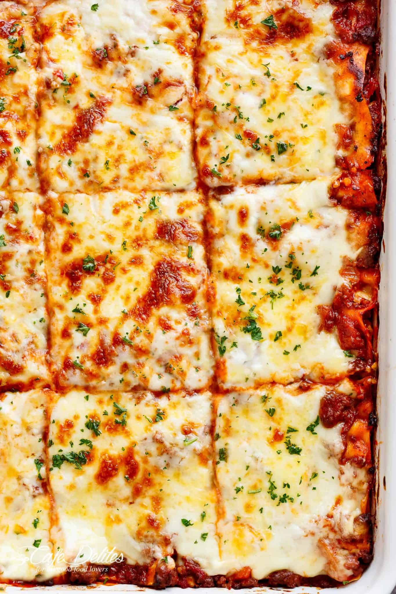

Lasagna

One of the most loved foods in the world is finally here! This is a traditional Italian Lasagna, made the Italian way with layers of slow cooked Bolognese ragu and cheese sauce.
Ingredients
Ragu Bolognese:
- 1 onion, finely chopped
- 1 medium carrot, finely diced
- 1 stick of celery, finely diced
- 2 garlic cloves, minced
- 1kg beef mince
- 800g crushed tomato
- 2 tbsp tomato paste
- 1 cup red wine
- 2 beef bouillon cubes, crumbled
- 2 bay leaves
- 1/2 tsp each dried thyme and oregano
- 2 tsp Worcestershire sauce
- 1-2 tsp sugar
- 1/2 tsp salt and black pepper
Cheese Sauce:
- 60g butter
- 1/2 cup flour
- 4 cups milk
- 2 cups shredded cheese (Colby, Gruyere, Chedder, Monterey Jack)
- pinch of freshly ground nutmeg
- salt & pepper
Lasagna:
- 350g fresh lasagna sheets (or 250g dried)
- 1 1/2 cups shredded mozzarella cheese
Method
Ragu:
- Heat oil in a large heavy based pot over medium heat. Add garlic, onion, celery and carrots. Cook for 10 minutes until softened and sweet - they should not brown (if they do, turn heat down)
- Add beef, turn heat up and cook the beef, breaking it up as you go.
- Once the beef has all turned brown, add the remaining Ragu ingredients EXCEPT the sugar.
- Stir then adjust the heat so it is bubbling very gently. Place the lid on and cook for 1.5 - 2 hours, stirring every now and then, then remove the lid and simmer for 30 minutes.
- The ragu is ready when the meat is really tender and the sauce has thickened and is rich (Note 6). Adjust salt and pepper to taste, and add sugar if required (Note 3)
Cheese Sauce:
- Warm milk up in a saucepan (optional - just makes sauce thicken faster).
- In a large saucepan, melt butter over medium low heat. Add flour and mix constantly for 1 minute.
- Pour about 1 cup of the milk in, mixing as you go to incorporate into the flour mixture. Once mostly lump free, add remaining milk. Use a whisk if needed to make it lump free.
- Turn heat up to medium high. Stir occasionally at first then regularly after a few minutes until sauce thickens - about 5 - 8 minutes. It should coat the back of the wooden spoon.
- Remove from heat, add cheese, nutmeg, salt and pepper. Mix until the cheese is melted. The Sauce should be thick but still easily pourable - the consistency of heavy cream (you need to be able to drizzle it over the Ragu when layering). If it's too thick, add a splash of water or milk.